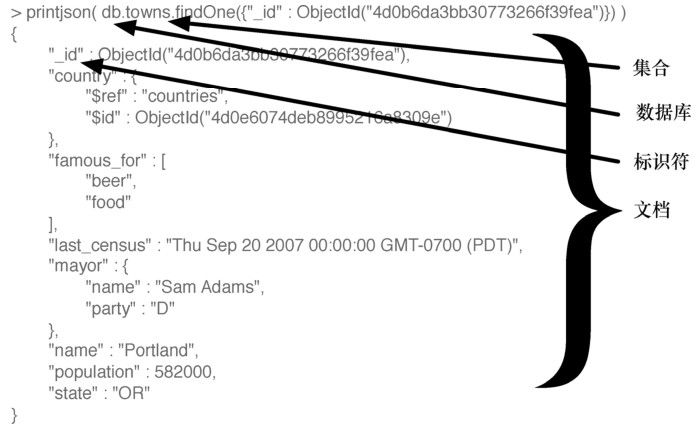
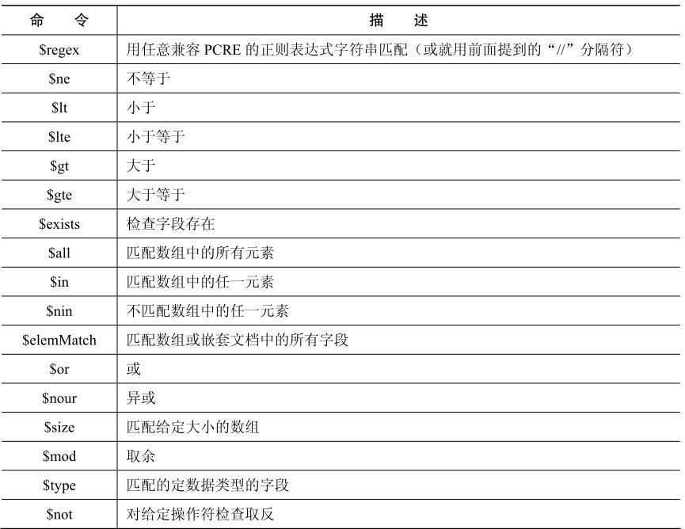
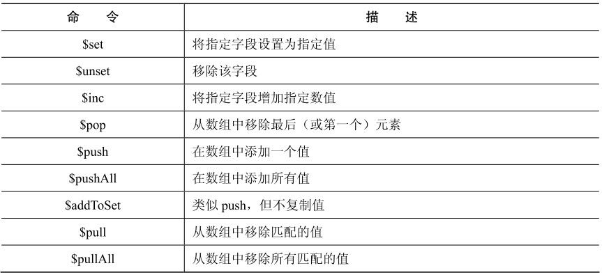
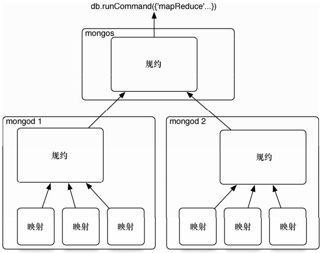
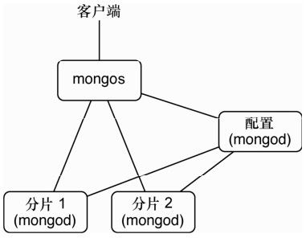

MongoDB 在许多方面就像一个电钻。完成任务的能力主要取决于选用的组件（从不同尺寸的钻头到磨砂机适配器（sander adapter））。MongoDB的长处在于多功能、强大、易于使用，而且既能完成大任务，也能完成小任务。虽然它是一个很新的工具，但逐渐成为工程师经常采用的工具。
MongoDB于2009年首次发布，成为NoSQL领域中冉冉升起的一颗新星。它被设计成为一个可伸缩的数据库（Mongo 的名字来自于“humongous”，其大无比），性能和易于存取数据是其核心设计目标。它是一个文档数据库，允许数据以嵌套的状态保存，而且重要的是，它能够以任意方式查询嵌套的数据。它不强制使用模式（与 Riak 相似，不同于Postgres），所以文档选择性包含的一些字段或类型，在该集合的其他文档中可以没有。
但不要认为MongoDB的灵活性让它变成一个玩具。有一些规模巨大的MongoDB（常简称为Mongo）生产环境部署，如Foursquare、bit.ly，CERN也用它来收集大型强子对撞机的数据。
关系数据库有强大的查询能力，Riak 和 HBase 这样的数据存储具有分布式的特点， Mongo在这两者之间找到了最佳结合点。项目创始人Dwight Merriman曾说过，MongoDB就是他希望在DoubleClick时拥有的数据库，那时他是DoubleClick的CTO，需要保存大规模的数据，又要能满足自由定义的查询。
Mongo是一个JSON文档数据库（虽然在技术上数据是以二进制JSON的形式保存的，即所谓的BSON）。Mongo文档可以看成是没有模式的关系表，它的值可以嵌套任意深度，要理解JSON文档的概念，请看图5-1。

图5-1 Mongo文档转出为 JSON的形式
一些Web项目需要高伸缩性的数据存储，但预算很少，不能购卖“大铁块”似的昂贵硬件。这样的项目越来越多，Mongo正是极好的选择。正因为Mongo缺乏结构化的模式，它可以随着数据模型而增长和变化。如果你就职于一个做Web项目的创业公司，怀着做大的梦想，或者已经很大，需要扩展服务器的数量，请考虑使用MongoDB。
我们今天将学习一些CRUD操作，最后完成在MongoDB中进行嵌套查询。像往常一样，我们不会展示安装步骤，但如果你访问Mongo网站1，就可以下载适合你的操作系统的版本，或找到从源代码构建的说明。如果你使用OS X，我们推荐通过Homebrew安装（brew install mongodb）。如果你使用Debian/Ubuntu的变种，请试用Mongodb.org自己的apt-get包。
注释1 http://www.mongodb.org/downloads
为了防止录入错误，Mongo要求你先创建目录，让mongod来存放数据。常见的位置是/data/db。要确保运行服务器程序的用户对这个目录有读写权限。如果它还没有运行，可以通过运行mongod来启动Mongo服务。
要创建一个名为book的新数据库，先在终端上执行下面的命令。它将连接到一个命令行界面，该界面是模仿MySQL的。
$ mongo book
在控制台输入 help，这是不错的开始。我们目前在 book 数据库中，但你可以通过show dbs来查看其他数据库，通过use命令切换数据库。
在Mongo中创建一个集合（collection，类似于Riak术语中的bucket）非常容易，只要在该集合中加入第一条记录。因为Mongo是没有模式的，所以不需要先定义任何东西，使用它就够了。而且，如果不在book数据库中添加值，它实际上并不存在。下面的代码创建/插入了一个towns集合：
> db.towns.insert({
name: "New York",
population: 22200000,
last_census: ISODate("2009-07-31"),
famous_for: [ "statue of liberty", "food" ],
mayor : {
name : "Michael Bloomberg",
party : "I"
}
})
Eric说：
观望
在我改变自己的产品代码之前，我对使用文档式的数据存储库持观望态度。我来自于关系数据库的世界，我发现迁移到Mongo很容易，因为它可以即席（ad hoc）查询。而且它的伸缩能力也符合我的Web伸缩梦想。但除了结构，我更信任开发团队。他们很乐意承认Mongo不完美，但他们的计划很清晰（而且通常遵守这些计划），这些计划是基于一般Web架构使用场景，而不是理想化地争论伸缩性和复制。在用MongoDB时，这种对可用性的务实关注会闪闪发光。对这种渐进行为的折中，就是在 Mongo 中任何给定的功能，都有几种方式来执行。
前一节说过文档是JSON（实际上是BSON），所以以JSON的格式添加新文档，其中的花括号{…}表示一个对象（如一个哈希表或映射表），对象包含键和值。其中的方括号[…]表示一个数组。可以用任意深度嵌套这些值。
通过show collections命令，可以检验现在存在的集合。
> show collections
system.indexes
towns
刚刚创建了towns，而system.indexes已经存在了。可以通过find()列出一个集合的内容。为了可读，对输出进行了格式化，但输出可能就是带换行的一行。
> db.towns.find()
{
"_id" : ObjectId("4d0ad975bb30773266f39fe3"),
"name" : "New York",
"population": 22200000,
"last_census": "Fri Jul 31 2009 00:00:00 GMT-0700 (PDT)",
"famous_for" : [ "statue of liberty", "food" ],
"mayor" : { "name" : "Michael Bloomberg", "party" : "I" }
}
与关系数据库不同，Mongo不支持服务器端的连接（Join）操作。单条JavaScript调用会取出一个文档，以及它所有嵌套的内容，不需要额外的工作。
你可能已经注意到，新插入城镇的JSON输出包含一个_id字段，值是ObjectId。这和PostgreSQL中SERIAL产生自增的数字主键类似。ObjectId总是12字节，由时间戳、客户端机器ID、客户端进程ID和3字节的增量计数器组成。图5-2展示了这些字节的布局。
这种自动计数设计的好处在于，每台机器上的每个进程都能够处理自己的 ID 生成，而不会与其他mongod实例发生冲突。这个设计选择提示了Mongo的分布式特征。
JavaScript
Mongo的母语是JavaScript，不论是复杂到mapreduce查询，还是简单到要求帮助。
> db.help()
> db.towns.help()
图5-2 ObjectId布局示例
这些命令将针对给定对象，列出相关的可用函数。db是一个JavaScript对象，它包含当前数据库的有关信息。db.x是一个JavaScript对象，代表一个集合（名为x）。命令就是JavaScript函数。
> typeof db
object
> typeof db.towns
object
> typeof db.towns.insert
function
如果你想查看源代码，就不带参数和圆括号来调用它（更像Python，而非Ruby）。
db.towns.insert
function (obj, _allow_dot) {
if (!obj) {
throw "no object passed to insert!";
}
if (!_allow_dot) {
this._validateForStorage(obj);
}
if (typeof obj._id == "undefined") {
var tmp = obj;
obj = {_id:new ObjectId};
for (var key in tmp) {
obj[key] = tmp[key];
}
}
this._mongo.insert(this._fullName, obj);
this._lastID = obj._id;
}
让我们创建自己的JavaScript函数，向towns集合填充更多的文档。
mongo/insert_city.js
function insertCity(
name, population, last_census,
famous_for, mayor_info
) {
db.towns.insert({
name:name,
population:population,
last_census: ISODate(last_census),
famous_for:famous_for,
mayor : mayor_info
});
}
可以将代码复制到shell。然后可以调用它。
insertCity("Punxsutawney", 6200, '2008-31-01',
["phil the groundhog"], { name : "Jim Wehrle" }
)
insertCity("Portland", 582000, '2007-20-09',
["beer", "food"], { name : "Sam Adams", party : "D" }
)
集合中现在应该有了3个城镇，可以像以前那样调用db.towns.find()来确认。
前面我们曾不带参数调用 find()函数，取得所有文档。要访问特定的文档，只需要设置_id属性。_id是ObjectId类型，要查询，就必须利用ObjectId（str）函数，对字符串进行转换。
db.towns.find({ "_id" : ObjectId("4d0ada1fbb30773266f39fe4") })
{
"_id" : ObjectId("4d0ada1fbb30773266f39fe4"),
"name" : "Punxsutawney",
"population" : 6200,
"last_census" : "Thu Jan 31 2008 00:00:00 GMT-0800 (PST)",
"famous_for" : [ "phil the groundhog" ],
"mayor" : { "name" : "Jim Wehrle" }
}
find()函数也接受可选的第二个参数，它是一个字段对象，用于过滤要取得哪些字段。如果只需要城镇的名称（以及_id），传入name和结果为1（或true）的值。
db.towns.find({ _id : ObjectId("4d0ada1fbb30773266f39fe4") }, { name : 1 })
{
"_id" : ObjectId("4d0ada1fbb30773266f39fe4"),
"name" : "Punxsutawney"
}
要取得除名称外的所有字段，将name设置为0（或者false或null）。
db.towns.find({ _id : ObjectId("4d0ada1fbb30773266f39fe4") }, { name : 0 })
{
"_id" : ObjectId("4d0ada1fbb30773266f39fe4"),
"population" : 6200,
"last_census" : "Thu Jan 31 2008 00:00:00 GMT-0800 (PST)",
"famous_for" : [ "phil the groundhog" ]
}
像PostgreSQL一样，在Mongo中可以构造自由定义的查询，按字段的值、范围或组合条件来查询。要找到以字母P开头、人口少于 10 000的所有城镇，可以使用Perl兼容的正则表达式（PCRE）1和一个范围操作符。
注释1 http://www.pcre.org/
db.towns.find(
{ name : /^P/, population : { $lt : 10000 } },
{ name : 1, population : 1 }
)
{ "name" : "Punxsutawney", "population" : 6200 }
Mongo中的条件操作符遵循字段的格式：{ $op : value }，其中$op是一个操作符，如$ne（不等于）。你可能想要更简明的语法，如field<value。但这是JavaScript代码，不是领域特定的查询语言，所以查询必须符合 JavaScript 的语法规则（今天晚些时候我们会看到，在特定情况下如何使用更短的语法，但现在我们先跳过）。
查询语言是Javascrip也有好处，可以像构造对象一样构造操作。这里构造了一个条件，人口必须在1万和100万之间。
var population_range = {}
population_range['$lt'] = 1000000
population_range['$gt'] = 10000
db.towns.find(
{ name : /^P/, population : population_range },
{ name: 1 }
)
{ "_id" : ObjectId("4d0ada87bb30773266f39fe5"), "name" : "Portland" }
不限于数字范围，还可以取日期范围。可以找到所有 last_census 小于等于 2008年1月31日的城镇名称，如下所示：
db.towns.find(
{ last_census : { $lte : ISODate('2008-31-01') } },
{ _id : 0, name: 1 }
)
{ "name" : "Punxsutawney" }
{ "name" : "Portland" }
请注意我们是怎样阻止输出_id字段的：显式地将它设置为0。
Mongo喜爱嵌套的数组数据。可以查询精确的匹配值…
db.towns.find(
{ famous_for : 'food' },
{ _id : 0, name : 1, famous_for : 1 }
)
{ "name" : "New York", "famous_for" : [ "statue of liberty", "food" ] }
{ "name" : "Portland", "famous_for" : [ "beer", "food" ] }
……以及匹配部分值……
db.towns.find(
{ famous_for : /statue/ },
{ _id : 0, name : 1, famous_for : 1 }
)
{ "name" : "New York", "famous_for" : [ "statue of liberty", "food" ] }
……或按所有匹配的值来查询……
db.towns.find(
{ famous_for : { $all : ['food', 'beer'] } },
{ _id : 0, name:1, famous_for:1 }
)
{ "name" : "Portland", "famous_for" : [ "beer", "food" ] }
……或排除匹配的值：
db.towns.find(
{ famous_for : { $nin : ['food', 'beer'] } },
{ _id : 0, name : 1, famous_for : 1 }
)
{ "name" : "Punxsutawney", "famous_for" : [ "phil the groundhog" ] }
但Mongo真正的力量来自于深入挖掘文档，并返回深层嵌套子文档的结果。要查询子文档，字段名称就是以点分隔的嵌套层的字符串。
例如，可以找到有独立市长的城镇……
db.towns.find(
{ 'mayor.party' : 'I' },
{ _id : 0, name : 1, mayor : 1 }
)
{
"name" : "New York",
"mayor" : {
"name" : "Michael Bloomberg",
"party" : "I"
}
}
……或那些市长没有注明党派的城镇：
db.towns.find(
{ 'mayor.party' : { $exists : false } },
{ _id : 0, name : 1, mayor : 1 }
)
{ "name" : "Punxsutawney", "mayor" : { "name" : "Jim Wehrle" } }
如果你想找到匹配单个字段的文档，前面的查询很好，但如果你需要匹配一个子文档的多个字段呢？
1．elemMatch
接下来讨论$elemMatch指令，从而完成深入挖掘。创建另一个集合，存放国家。这次将利用自选的字符串来覆盖每个_id。
db.countries.insert({
_id : "us",
name : "United States",
exports : {
foods : [
{ name : "bacon", tasty : true },
{ name : "burgers" }
]
}
})
db.countries.insert({
_id : "ca",
name : "Canada",
exports : {
foods : [
{ name : "bacon", tasty : false },
{ name : "syrup", tasty : true }
]
}
})
db.countries.insert({
_id : "mx",
name : "Mexico",
exports : {
foods : [{
name : "salsa",
tasty : true,
condiment : true
}]
}
})
为了验证加入的国家，可以执行count函数，预期的结果是3。
> print( db.countries.count() )
3
找出一个国家，它不但出口培根（bacon），而且培根的味道不错。
db.countries.find(
{ 'exports.foods.name' : 'bacon', 'exports.foods.tasty' : true },
{ _id : 0, name : 1 }
)
{ "name" : "United States" }
{ "name" : "Canada" }
但这不是我们想要的。Mongo 返回了加拿大（Canada），因为它出口培根和味道不错的糖浆（syrup）。这里$elemMatch就能帮上忙。它规定如果文档（或嵌套的文档）满足所有的条件，该文档就匹配成功。
db.countries.find(
{
'exports.foods' : {
$elemMatch : {
name : 'bacon',
tasty : true
}
}
},
{ _id : 0, name : 1 }
)
{ "name" : "United States" }
$elemMatch条件也可以利用高级操作符。可以找出一个国家，它出口味道不错的食品，并且有调味品（condiment）的标签。
db.countries.find(
{
'exports.foods' : {
$elemMatch : {
tasty : true,
condiment : { $exists : true }
}
}
},
{ _id : 0, name : 1 }
)
{ "name" : "Mexico" }
墨西哥（Mexico）正是我们想要的。
2．布尔操作符
到目前为止，所有的条件都是隐含的“与”操作。如果试图寻找一个国家，它的name是United States，并且_id是mx，Mongo会找不到结果。
db.countries.find(
{ _id : "mx", name : "United States" },
{ _id : 1 }
)
但是，利用$or来查找一个或另一个条件，将返回两条结果。这种格式就像前缀表示法：OR A B。
db.countries.find(
{
$or : [
{ _id : "mx" },
{ name : "United States" }
]
},
{ _id:1 }
)
{ "_id" : "us" }
{ "_id" : "mx" }
操作符很多，这里不能一一介绍，但我们希望这已经让你感受到 MongoDB 的强大查询能力。下面并非全部命令的列表，但包含了很大一部分。

可以在MongoDB的在线文档上找到所有的命令，或从Mongo的网站上下载一份备忘表。在接下来的几天里，我们还会再次用到查询。
我们有一个问题。New York和Punxsutawney是够独特的，但添加了Oregon的Portland，或Maine的Portland（或Texas或其他）了吗？更新城镇集合，添加美国的一些州。
update（条件，操作）函数需要两个参数。第一个参数是条件查询，与传递给find()的对象一样。第二个参数要么是一个对象（它的字段将取代匹配的文档），要么是一个修改操作。在这个例子中，修改操作将state字段设置为字符串OR。
db.towns.update(
{ _id : ObjectId("4d0ada87bb30773266f39fe5") },
{ $set : { "state" : "OR" } }
);
你可能会想，为什么需要$set 操作呢？Mongo 不是从属性的角度来思考问题的，它只在内部隐含地理解属性，这是为了优化。但接口完全不是面向属性的。Mongo是面向文档的。你很少需要这样（请注意没有$set操作）：
db.towns.update(
{ _id : ObjectId("4d0ada87bb30773266f39fe5") },
{ state : "OR" }
);
这会将整个匹配的文档替换成你提供的文档（{ state : "OR" }）。既然你没有给出$set这样的命令，Mongo就认为你想整个换掉，所以要注意。
可以通过查找来验证更新成功（请注意，使用findOne()仅取出一个匹配对象）。
db.towns.findOne({ _id : ObjectId("4d0ada87bb30773266f39fe5") })
{
"_id" : ObjectId("4d0ada87bb30773266f39fe5"),
"famous_for" : [
"beer",
"food"
],
"last_census" : "Thu Sep 20 2007 00:00:00 GMT-0700 (PDT)",
"mayor" : {
"name" : "Sam Adams",
"party" : "D"
},
"name" : "Portland",
"population" : 582000,
"state" : "OR"
}
可以做的不止是$set一个值。$inc（追加一个数）也是很有用的操作。我们让Portland的人口增加1000。
db.towns.update(
{ _id : ObjectId("4d0ada87bb30773266f39fe5") },
{ $inc : { population : 1000} }
)
此外还有许多指令，如针对数组的$positional操作符。常常会增加新的操作符，在线文档中会更新。下面是主要的指令：

前面曾提到，Mongo 不是为了执行联接（join）而设计的。由于它的分布式特点，连接是非常低效的操作。但是，有时候文档相互引用仍然有用。在这种情况下，Mongo开发团队建议使用{ $ref : "collection_name"，$id : "reference_id" }这样的结构。例如，可以更新towns集合，让它引用countries中的文档。
db.towns.update(
{ _id : ObjectId("4d0ada87bb30773266f39fe5") },
{ $set : { country: { $ref: "countries", $id: "us" } } }
)
现在可以从towns集合中取出Portland。
var portland = db.towns.findOne({ _id : ObjectId("4d0ada87bb30773266f39fe5") })
然后，要取出这个城镇的国家，可以用保存的$id来查询countries集合。
db.countries.findOne({ _id: portland.country.$id })
更好的是，在JavaScript中，可以通过引用字段取得town文档的集合名称。
db[ portland.country.$ref ].findOne({ _id: portland.country.$id })
后面两个查询是等价的，第二种更倾向数据驱动。
从集合中删除文档很简单。只要用remove()来代替find函数，所有匹配条件的文档都会删除。要注意，整个匹配的文档都会删除，而不只是匹配的元素或匹配的子文档，这一点很重要。
拼字游戏警告
对于拼写错误来说，Mongo不能很友好地处理。如果你还没遇到这个问题，可能将来会遇到，所以要当心。可以比较静态和动态编程语言。在静态语言中先定义，而动态语言将接受本来不希望的值，甚至是无意思的类型，如person_name=5。
文档是没有模式的，所以Mongo没法知道你是否希望在城市中插入population，还是想对lust_census查询。它会很开心地插入这样的字段，或告诉你没有匹配的结果。
灵活性是有代价的。买者自慎之。
在执行remove()之前，推荐使用find()来验证条件。在执行操作时，Mongo不会三思而后行。删除所有出口味道一般的培根的国家。
var bad_bacon = {
'exports.foods' : {
$elemMatch : {
name : 'bacon',
tasty : false
}
}
}
db.countries.find( bad_bacon )
{
"_id" : ObjectId("4d0b7b84bb30773266f39fef"),
"name" : "Canada",
"exports" : {
"foods" : [
{
"name" : "bacon",
"tasty" : false
},
{
"name" : "syrup",
"tasty" : true
}
]
}
}
所有事情看起来都不错。执行删除。
db.countries.remove( bad_bacon )
db.countries.count()
2
现在执行count()，就只剩下两个国家了。如果是这样，删除就成功了！
让我们用一个更有趣的查询选项来结束今天的内容：代码。可以要求 MongoDB对文档执行一个判断函数。将它放在最后是因为，它应该是最后才想到的手段。这些查询执行得很慢，不能利用索引，Mongo不能优化它们。但有时候很难拒绝定制代码的力量。
假定要寻找人口在 6000～600 000的城市。
db.towns.find( function() {
return this.population > 6000 && this.population < 600000;
} )
Mongo甚至为简单的判断函数提供了捷径。
db.towns.find("this.population > 6000 && this.population < 600000")
可以用$where 子句来执行定制代码的判断条件。在这个例子里，查询还过滤出以groundhog闻名的城镇。
db.towns.find( {
$where : "this.population > 6000 && this.population < 600000",
famous_for : /groundhog/
} )
注意：Mongo将对每个文档以蛮力方式执行这个函数，而我们不能保证给定的字段存在。例如，如果假定population字段存在，即使某一个文档中没有population，整个查询都会失败，因为JavaScript不能够正确地执行。写定制的JavaScript函数时要当心，在尝试定制代码时要先熟悉JavaScript的使用。
今天，我们接触了我们的第一个文档数据库，MongoDB。我们看到如何将嵌套的数据另存为JSON对象，并查询任何深度的数据。你知道，文档数据库可以看成是关系模型中的一行数据，但没有模式，以生成的_id为主键。在Mongo中，一组文档称为一个集合，类似于PostgreSQL中的表。
我们以前遇到的方式是存储一些简单数据类型的集合，Mongo与此不同，保存复杂的、非标准化的文档，存取任意JSON结构的集合。Mongo在这种灵活的存储策略上提供了强大的查询机制，这是任何预定义的模式都不能提供的。
由于非标准化的特点，文档存储很适合存放品质未知的数据，而其他的方式（如关系型和列型）希望你事先知道，添加或修改字段时需要改变模式。
第1天作业
求索
1．将MongoDB的在线文档加入书签。
2．查看如何在Mongo中创建正则表达式。
3．熟悉命令行db.help()和db.collections.help()的输出。
4．找到你使用的语言（Ruby、Java、PHP等）的Mongo驱动程序。
实践
1．输出一份 JSON文档，它包含{ "hello" : "world" }。
2．利用不区分大小写的正则表达式，找出包含单词new的城镇。
3．找到所有名称中包含字母e，并且以food或beer闻名的城镇。
4．创建一个名为 blogger 的新数据库，其中包含一个名为 articles 的集合，插入一篇新文章，包含作者名称、email、创建日期和文字内容。
5．更新这篇文章，加入一个评论数组，评论包含作者和文字内容。
6．执行外部JavaScript文件中包含的查询。
提高 MongoDB 的查询性能是今天的第一项学习内容，接下来是一些更强大、更复杂的分组查询。最后，利用mapreduce来进行一些分析，像我们在Riak中做的那样，从而完成今天的学习。
Mongo有一个有用的内置特征，就是用索引来增加查询的速度，我们知道，不是所有NoSQL数据库都有这个特征。MongoDB采用了一些最好的数据结构实现索引，如经典的B树，以及其他一些附加方法，如两维和球形地理空间（shperical GeoSpatial）索引。
接下来要做一个小实验，看看MongoDB的B树索引的力量。将加入一些电话号码，它们的国家码是随机选取的（可以自由地用自己的国家码来替换）。在控制台输入下面的代码。它将生成 100 000 个电话号码（可能要一点时间），范围介于 1-800-555-0000 到1-800-565-9999。
mongo/populate_phones.js
populatePhones = function(area,start,stop) {
for(var i=start; i < stop; i++) {
var country = 1 + ((Math.random() * 8) << 0);
var num = (country * 1e10) + (area * 1e7) + i;
db.phones.insert({
_id: num,
components: {
country: country,
area: area,
prefix: (i * 1e-4) << 0,
number: i
},
display: "+" + country + " " + area + "-" + i
});
}
}
执行这个函数，参数是 3位的地区码（如 800），以及一个 7位的号码范围（5 550 000～5 650 000，输入时请检查 0的个数）。
populatePhones( 800, 5550000, 5650000 )
db.phones.find().limit(2)
{ "_id" : 18005550000, "components" : { "country" : 1, "area" : 800,
"prefix" : 555, "number" : 5550000 }, "display" : "+1 800-5550000" }
{ "_id" : 88005550001, "components" : { "country" : 8, "area" : 800,
"prefix" : 555, "number" : 5550001 }, "display" : "+8 800-5550001" }
在创建任何一个新集合时， Mongo 会自动在_id 上建立索引。这些索引可以在system.indexes中看到。下面的查询展示了数据库中所有的索引：
db.system.indexes.find()
{ "name" : "_id_", "ns" : "book.phones", "key" : { "_id" : 1 } }
因为大多数查询不只涉及_id，所以需要在这些字段上建立索引。
将在display字段上创建一个B树索引。但首先，验证索引将改善速度。要做到这一点，先在没有索引时执行一个查询。explain()方法用于输出给定操作的细节。
db.phones.find({display: "+1 800-5650001"}).explain()
{
"cursor" : "BasicCursor",
"nscanned" : 109999,
"nscannedObjects" : 109999,
"n" : 1,
"millis" : 52,
"indexBounds" : {
}
}
输出会与我们的不一样，但请注意 millis 字段（完成查询的毫秒数），它可能是两位数。
通过调用 ensureIndex(fields,options)，在集合上创建索引。参数 fields是一个对象，包含要建索引的那些字段。参数 options 描述了要建的索引类型。在这个例子里，将在display上建立唯一索引，它将丢弃重复的条目。
db.phones.ensureIndex(
{ display : 1 },
{ unique : true, dropDups : true }
)
现在重试find()，检查explain()，看看情况是否改善。
db.phones.find({ display: "+1 800-5650001" }).explain()
{
"cursor" : "BtreeCursor display_1",
"nscanned" : 1,
"nscannedObjects" : 1,
"n" : 1,
"millis" : 0,
"indexBounds" : {
"display" : [
[
"+1 800-5650001",
"+1 800-5650001"
]
]
}
}
millis的值从52降到了0，改进是无穷大（52/0）！这是开玩笑，但速度的提高幅度是数量级式的。同时也注意，cursor（光标）从Basic变为B树（称为光标是因为它指向存放的值，它不包含这些值）。Mongo 不再扫描整个集合，而是通过查找树来取得值。重要的是，扫描的对象从 109 999降到了 1，因为它变成了在唯一索引上的查找。
explain()是一个有用的函数，但只在测试特定的查询调用时才会用它。如果需要在普通的测试或生产环境中进行分析，就需要系统剖析器（System Profiler）。
将剖析级别设置为2（级别2将保存所有的查询，级别1只保存超过100毫秒的、比较慢的查询），然后像往常一样运动fird()。
db.setProfilingLevel(2)
db.phones.find({ display : "+1 800-5650001" })
这将在system.profile集合中创建一个新对象，可以像读其他表一样读取它。ts是执行查询时的时间戳，info是操作的字符串描述，millis是它所花的时长。
db.system.profile.find()
{
"ts" : ISODate("2011-12-05T19:26:40.310Z"),
"op" : "query",
"ns" : "book.phones",
"query" : { "display" : "+1 800-5650001" },
"responseLength" : 146,
"millis" : 0,
"client" : "127.0.0.1",
"user" : ""
}
像昨天的嵌套查询一样，Mongo可以在嵌套的值上建立索引。如果你希望在所有的地区码上建立索引，使用带点的字段表示法：components.area。在产品环境中，应该总是使用{ background : 1 }选项，在后台建立索引。
db.phones.ensureIndex({ "components.area": 1 }, { background : 1 })
如果利用find()发现所有的phones集合上的系统索引，新的应该出现在最后。第一个索引总是自动创建的，以便按_id快速查询，第二个是前面建立的唯一索引。
db.system.indexes.find({ "ns" : "book.phones" })
{
"name" : "_id_",
"ns" : "book.phones",
"key" : { "_id" : 1 }
}
{
"_id" : ObjectId("4d2c96d1df18c2494fa3061c"),
"ns" : "book.phones",
"key" : { "display" : 1 },
"name" : "display_1",
"unique" : true,
"dropDups" : true
}
{
"_id" : ObjectId("4d2c982bdf18c2494fa3061d"),
"ns" : "book.phones",
"key" : { "components.area" : 1 },
"name" : "components.area_1"
}
在book.phones上的索引漂亮地完成了。
在本节结束时，我们应该注意，在大型的集合上创建索引可能较慢，并且占用较多的资源。在建立索引时，总是应该考虑这些冲击，不要在高峰时间进行，要在后台进行，要手动进行，而不是自动创建索引。网上还有更多索引技巧，但这些是一些基本技巧，最好知道。
昨天研究的查询，对于基本的数据抽取是有用的，但后面的处理需要你来解决。例如，假定我们想统计大于559–9999的电话号码个数，我们希望数据库在后面执行这样的计数。像PostgreSQL一样，count()是最基本的聚合器。它进行查询，并返回匹配文档的个数。
db.phones.count({'components.number': { $gt : 5599999 } })
50000
改变是好的
聚合查询返回的结构与我们习惯的单个文档不同。count()将结果聚合成文档的计数，distinct()将结果聚合成一个数组，group()返回的文档是用它自己的设计。即使是mapreduce，通常也要花一些努力，取出类似于内部存储文档的对象。
为了体现接下来几个聚合查询的威力，再向phones集合中添加 100 000个电话号码，这次使用另一个地区码。
populatePhones( 855, 5550000, 5650000 )
如果多个文档匹配条件，distinct()命令返回每个匹配的值（不是整个文档）。可以像下面这样取得小于 5 550 005的不同components.number：
db.phones.distinct('components.number', {'components.number': { $lt : 5550005 } })
[ 5550000,5550001,5550002,5550003,5550004 ]
虽然有两个 5 550 005（一个地区码是 800，另一个是 855），但在结果中只出现一次。
group()聚合查询类似SQL中的GROUP BY。它也是Mongo中最复杂的基本查询。可以对大于5599999的电话号码计数，并且按地区码将结果放入不同的分组。其中key是按其分组的字段，cond（条件）是我们感兴趣的值的范围，reduce是一个函数，管理如何输出值。
还记得第3章中的mapreduce吗？数据已经映射到原有的文档集合。不再需要映射了，只要对文档进行归约。
db.phones.group({
initial: { count:0 },
reduce: function(phone, output) { output.count++; },
cond: { 'components.number': { $gt : 5599999 } },
key: { 'components.area' : true }
})
[ { "components,area":"800" : "leunt": 50000, "lomponents,area": "855" : "count": 50000 } ]
诚然，接下来的两个例子是奇怪的使用场景。它们只是用来展示group()的灵活性。
可以用下面的group()调用来重现count()函数的结果。这里省去了聚合键：
db.phones.group({
initial: { count:0 },
reduce: function(phone, output) { output.count++; },
cond: { 'components.number': { $gt : 5599999 } }
})
[ { "count" : 100000 } ]
这里首先建立一个初始对象，它包含一个count字段，初值是0（这里创建的字段将出现在输出中）。接下来描述对这个字段做什么，即声明一个归约函数，对遇到的每个文档，让计数加1。最后，给出了一个分组条件，限制哪些文档需要归约。结果与count()是一样的，因为条件是一样的。这里省去了键，因为希望所有匹配的文档都加入结果集。
也可以重现distinct()函数。出于性能的考虑，先创建一个对象，将一些数字作另存为字段（实际上创建了一个自由定义的集合）。在规约函数中（它针对每个匹配的文档执行），将值设置为1，作为占位符（它是我们想要的字段）。
从技术上这就是所需要的。但是，如果我们真想重现distinct()，就应该返回一个整数数组。所以添加了一个finalize(out)方法，它在返回值之前的最后一刻执行，将对象转换成一个字段值数组。这个函数接着将这些字符串转换成整数（如果你希望看到事情完成的过程，可以去掉finalize函数集，执行下面的命令）。
db.phones.group({
initial: { prefixes : {} },
reduce: function(phone, output) {
output.prefixes[phone.components.prefix] = 1;
},
finalize: function(out) {
var ary = [];
for(var p in out.prefixes) { ary.push( parseInt( p ) ); }
out.prefixes = ary;
}
})[0].prefixes
[ 555,556,557,558,559,560,561,562,563,564 ]
group()函数很强大（像SQL的GROUP BY一样），但Mongo的实现也有不利的一面。首先，结果不能超过 10 000个文档。而且，如果你对Mongo集合进行了分片（明天将讨论），group()就无效了。还有很多灵活的方式来创建查询。出于这样或那样的原因，稍后将深入MongoDB的mapreduce实现。但首先，我们将弄清楚客户端命令和服务器端命令的区别，它对应用有重要影响。
如果试图通过命令行执行下面的函数（或通过驱动程序），客户端会将电话文档逐个取到本地（所有 100 000个），然后再将每个电话文档逐个保存到服务器上。
mongo/update_area.js
update_area = function() {
db.phones.find().forEach(
function(phone) {
phone.components.area++;
phone.display = "+"+
phone.components.country+" "+
phone.components.area+"-"+
phone.components.number;
db.phones.update({ _id : phone._id }, phone, false);
}
)
}
但是，Mongo的db对象提供了一个名为eval()的命令，它将指定的函数传给服务器。这极大地减少了客户端与服务器之间的对话，因为代码是在远端执行的。
> db.eval(update_area)
除了执行JavaScript函数，Mongo中还有几个预设的命令，其中大部分是在服务器端执行的，虽然有些要求只能在 admin数据库上执行（可以通过use admin来访问）。
> use admin
> db.runCommand("top")
top命令将输出服务器上所有集合的访问细节。
> use book
> db.listCommands()
在执行 listCommands()时，你可能会注意到我们用过的许多命令。实际上，可以通过runCommand()方法执行许多常见命令，如统计电话的个数。但是，你可能会注意到输出有一点区别。
> db.runCommand({ "count" : "phones" })
{ "n" : 100000, "ok" : 1 }
返回的个数 n 是正确的（100 000），但格式是一个对象，包含 ok 字段。这是因为db.phones.count()是一个封装函数，为了方便，通过shell的JavaScript接口来创建的，而runCommand()是在服务器上执行计数。我们曾提到过，可以不带圆括号调用，查看像count()这样的函数是如何工作的。
> db.phones.count
function (x) {
return this.find(x).count();
}
有趣！collection.count()只是一种方便的封装，实际上先调用 find()（它本身又是一层封装，实际上是一个本地查询对象，返回指向结果集的光标），再对 find()的结果调用count()。
> db.phones.find().count
你会看到一个大得多的函数（大到不方便在这里列出）。但请看一下，在一些设置代码之后，你会看到下面这样的代码：
var res = this._db.runCommand(cmd);
if (res && res.n != null) {
return res.n;
}
有趣加倍了！count()执行了runCommand()，并返回字段n的值。
1．runCommand
在深入研究方法的工作原理时，让我们来看看runCommand()函数。
> db.runCommand
function (obj) {
if (typeof obj == "string") {
var n = {};
n[obj] = 1;
obj = n;
}
return this.getCollection("$cmd").findOne(obj);
}
结果表明，runCommand()也是一个辅助函数，封装了一个调用，该调用针对名为$cmd的集合。可以直接对这个集合调用，从而执行任何方法。
> db.$cmd.findOne({'count' : 'phones'})
{ "n" : 100000, "ok" : 1 }
这就是最底层的机制了，也是驱动程序与Mongo服务器通信的一般方式。
2．岔开话题
这里岔开话题有两个理由：
●彻底说清楚mongo控制台上执行的大多数命令，实际上是在服务器上执行的，而不是在客户端上执行。客户端只是提供了一些方便的封装函数。
●可以利用执行服务器端代码的概念，实现我们自己的一些目的，在MongoDB中创建类似PostgreSQL中存储过程的对象。
任何 JavaScript 函数都可以保存在一个名为 system.js 的特殊集合中。这是一个普通集合，可以将函数名作为_id，函数体作为value。
> db.system.js.save({
_id:'getLast',
value:function(collection){
return collection.find({}).sort({'_id':1}).limit(1)[0]
}
})
接下来，通常会直接在服务器上执行它。eval()函数将这个字符串传给服务器，将它作为JavaScript代码来执行，并返回结果。
> db.eval('getLast(db.phones)')
它返回的值应该与在本地调用getLast(collection)一样。
> db.system.js.findOne({'_id': 'getLast'}).value(db.phones)
值得一提的是，eval()在执行时会阻塞mongod，所以它主要适用于快速执行的命令和测试，而不是常见的产品过程。也可以在$where 和 mapreduce 中使用这个函数。武器库还有最后一样武器，即在MongoDB中开始执行mapreduce。
Mongo的mapreduce方式与Riak的类似，有一些小区别。不是由map()函数返回转换过的值，而是要求映射函数（mapper）用一个主键去调用 emit()函数。这样做的好处在于，可以让每个文档发出不止一次。reduce()函数接受单个键和发送给该键的一个值列表。最后Mongo提供了可选的第3步，名为finalize()，它在规约函数（reducer）执行之后，对每个映射的值仅执行一次。这样你就能够执行最终的计算，或完成需要的清理工作。
我们已经清楚地知道了mapreduce的基础知识，接下来将快速越过戏水池，直接进入深水区。生成一份报表，对每个国家中包含同样数字的电话号码进行计数。首先，要保存一个辅助函数。它抽取所有不同的数字，构成一个数组（要理解整个 mapreduce，并不需要理解这个辅助函数的工作原理）。
mongo/distinct_digits.js
distinctDigits = function(phone){
var
number = phone.components.number + '',
seen = [],
result = [],
i = number.length;
while(i--) {
seen[+number[i]] = 1;
}
for (i=0; i<10; i++) {
if (seen[i]) {
result[result.length] = i;
}
}
return result;
}
db.system.js.save({_id: 'distinctDigits', value: distinctDigits})
在mongo命令行载入这个文件。如果该文件在启动mongo的同一个目录下，只需要文件名就可以了；否则，需要完整的路径。
> load('distinct_digits.js')
完成之后，可以做一个快速测试（如果你遇到麻烦，别介意添加一些简单的print()函数）。
db.eval("distinctDigits(db.phones.findOne({ 'components.number' : 5551213 }))")
[ 1,2,3,5 ]
现在，可以着手映射函数了。对于任何mapreduce函数来说，决定哪些字段要映射是关键，因为这规定了返回的聚合值。因为报表负责找出不同的数字，不同值的数组是一个字段。但由于需要按country（国家）来查询，因此还有另一个字段。将这两个值作为一个复合键：{digits : X, country : Y}.
因为目标只是对这些值计数，所以发出值1（每个文档代表了要计数的一项）。规约函数的任务是将所有这些1加在一起。
mongo/map_1.js
map = function() {
var digits = distinctDigits(this);
emit({digits : digits, country : this.components.country}, {count : 1});
}
mongo/reduce_1.js
reduce = function(key, values) {
var total = 0;
for(var i=0; i<values.length; i++) {
total += values[i].count;
}
return { count : total };
}
results = db.runCommand({
mapReduce: 'phones',
map: map,
reduce: reduce,
out: 'phones.report'
})
因为通过out参数设置了集合的名称（out : 'phones.report'），所以可以像对其他集合那样查询结果。它是一个物化视图（materialized view），可以在查看表清单时看到。
> db.phones.report.find({'_id.country' : 8})
{
"_id" : { "digits" : [ 0, 1, 2, 3, 4, 5, 6 ], "country" : 8 },
"value" : { "count" : 19 }
}
{
"_id" : { "digits" : [ 0, 1, 2, 3, 5 ], "country" : 8 },
"value" : { "count" : 3 }
}
{
"_id" : { "digits" : [ 0, 1, 2, 3, 5, 6 ], "country" : 8 },
"value" : { "count" : 48 }
}
{
"_id" : { "digits" : [ 0, 1, 2, 3, 5, 6, 7 ], "country" : 8 },
"value" : { "count" : 12 }
}
还有更多
输入it，以便继续遍历结果集。请注意，唯一发出的键在_id字段中，所有从规约函数返回的数据在字段value中。
如果你希望这个mapreduce函数只输出结果，而不是将结果放到一个集合中，可以将out值设置为{ inline : 1 }，但要记住，输出的结果是有大小限制的。对于Mongo 2.0来说，这个限制是16MB。
还记得在第3章中，规约函数可以既不用映射的（发出的）结果，也不用其他规约函数的结果作为输入。如果两个规约函数映射到相同的主键上，为什么一个规约函数的输出要作为另一个的输入？请考虑一下，如果运行在不同的服务器上，将是怎样的情形。图5-3展示了这种情况。

图5-3 Mongo在两个服务器上调用映射和规约
每个服务器必须执行它自己的map()和reduce()函数，然后将这些需要合并的结果推给最初发起调用的服务，将它们收集起来。经典的分而治之。如果将规约函数的输出重命名为total（总和），而不是count（计数），就需要在循环中同时处理两种情况，如下所示：
mongo/reduce_2.js
reduce = function(key, values) {
var total = 0;
for(var i=0; i<values.length; i++) {
var data = values[i];
if('total' in data) {
total += data.total;
} else {
total += data.count;
}
}
return { total : total };
}
但是，Mongo预计你可能需要执行某些最后的修改，诸如，重命名一个字段，或进行一些其他计算。如果确实需要输出字段是total，那么可以实现一个finalize()函数，它的工作方式与group()中的finalize函数是一样的。
第2天我们通过引入一些聚合查询，增强了查询的威力：count()、distinct()，最后是group()。为了减少这些查询的响应时间，使用了MongoDB的索引选项。如果需要更强大，始终存在的mapReduce()是可用的。
第2天作业
求索
1．执行管理（admin）命令的快捷方式。
2．查询和光标的在线文档。
3．mapreduce的MongoDB文档。
4．通过JavaScript接口，研究3个集合函数的代码：help()、findOne()和stats()。
实践
1．实现一个finalize方法，将count作为total输出。
2．安装一种选定语言的Mongo驱动程序，并连接到数据库。通过它填充一个集合，并在其中一个字段上建立索引。
Mongo具有强大的能力，可以用不同的方式来存储和查询数据。但是其他数据同样也能做到。文档数据库的独特之处在于，它们能够有效地处理任意嵌套的、无模式的数据文档。Mongo在文档存储领域的独特之处在于，它能够在多台服务器上实现伸缩，对集合进行复制（复制数据到其他服务器）或分片（将一个集合分成几片），并行执行查询。复制和分片都提高了可用性。
Mongo的设计目的是能够伸缩，而不是单独运行。它是为数据一致性和分区容错性而生的，但数据分片是有成本的：如果一部分丢失，就会危及整个集合。查询只包含西半球国家的集合，有什么意义呢？对这种分片的隐含弱点，Mongo处理的方法很简单：复制。图5-4说明了复制的重要性。你几乎不应该在生产环境中使用单个Mongo实例，而是应该在多个服务器上复制存储的数据。
图5-4 复制的重要性
今天，我们不再摆弄原有的数据库，而是从头开始建立一些新服务器。Mongo的默认端口是 27017，所以将在其他端口启动服务器。前面曾提到，必须先创建数据目录，所以创建3个目录：
$ mkdir ./mongo1 ./mongo2 ./mongo3
接下来启动Mongo服务器。这次加上replSet标记，取名为book，并指定端口。在做这件事时，打开REST标记，这样就能用Web接口。
$ mongod --replSet book --dbpath ./mongo1 --port 27011 --rest
打开另一个终端窗口，执行下一条命令，启动另一个服务器，指向不同的目录，监听另一个端口。然后打开第3个终端窗口，启动第3个服务器。
$ mongod --replSet book --dbpath ./mongo2 --port 27012 --rest
$ mongod --replSet book --dbpath ./mongo3 --port 27013 --rest
请注意，你会在输出中看到很多这样的信息。
[startReplSets] replSet can't get local.system.replset config from self \
or any seed (EMPTYCONFIG)
这是好事，我们还没有初始化副本集，Mongo向我们告知。启动一个mongo shell，连接一个服务器，执行rs.initiate()函数。
$ mongo localhost:27011
> rs.initiate({
_id: 'book',
members: [
{_id: 1, host: 'localhost:27011'},
{_id: 2, host: 'localhost:27012'},
{_id: 3, host: 'localhost:27013'}
]
})
> rs.status()
注意，用到了新名对象rs（副本集）。像其他对象一样，它也有help()方法供调用。执行status()命令，可以知道何时副本集在执行，所以在继续操作之前，要不断检查完成的状态。如果查看3个服务器的输出，应该看到一个服务器输出下面一行内容：
[rs Manager] replSet PRIMARY
另两个服务器将输出：
[rs_sync] replSet SECONDARY
PRIMARY将作为主服务器。很可能这是监咱27011端口的服务器（因为它先启动），但如果不是这样，只要再启动一个控制台，连接主服务器。在命令行中插入任意老数据，并且要做一个实验。
> db.echo.insert({ say : 'HELLO!' })
插入之后，退出控制台，然后要关闭主节点，测试变更已经复制。按CTRL+C快捷键就够了。如果查看剩下两个服务器的日志，应该看到其中一个已经升级成为主服务器（它将输出replSet PRIMARY）。打开控制台并连接它（对我们来说，它是 localhost:27012）， db.echo.find()应该包含插入的值。
我们还要玩一个“控制台推诿”的游戏。打开一个控制台，连接剩下的 SECONDARY （从）服务器。为了确认，执行isMaster()函数。结果是这样的：
$ mongo localhost:27013
MongoDB shell version: 1.6.2
connecting to: localhost:27013/test
> db.isMaster()
{
"setName" : "book",
"ismaster" : false,
"secondary" : true,
"hosts" : [
"localhost:27013",
"localhost:27012",
"localhost:27011"
],
"primary" : "localhost:27012",
"ok" : 1
}
在这个shell中，尝试插入另一个值。
> db.echo.insert({ say : 'is this thing on?' })
not master
消息 not master告诉我们，我们不能写入从结点。你也不能直接从它读取。每个副本集只能有一个主节点，你必须与它打交道。它是这个副本集的入口。
与单一数据源的数据库相比，复制数据有它自己的问题。在 Mongo 设置中，要决定主节点宕机时谁提升为主节点，这是一个问题。Mongo 处理这个问题的办法，是让每个mongod服务有一张选票，拥有最新数据的服务将提升为主节点。现在应该还有两个mongod服务在运行。继续关掉当前的主节点。记住，当对3个节点这样做时，另两个节点中的一个会提升为新的主节点。但这次情况有所不同。最后剩下的服务器的输出会像这样：
[ReplSetHealthPollTask] replSet info localhost:27012 is now down (or...
[rs Manager] replSet can't see a majority, will not try to elect self
这就要归结到Mongo建立服务器的哲学，以及为什么总是应该有奇数个服务器（3个、5个等）。
接下来重新启动另两个服务器，并查看日志。当两个节点重新出现时，它们就进入恢复状态，并试图与新的主节点再次同步数据。“怎么这么倒霉！？”（我们听到你在叫）。“那么，如果原来的主节点还有一些数据没有传播出去，怎么办？”这些操作放弃了。直到大多数节点都有了数据的副本时，对Mongo副本集的写入才认为成功。
复制的概念很容易接受：写入一个 MongoDB 服务器，把数据复制到该副本集的其他服务器上。如果一个服务器不可用，其他服务器中的一个会提升为主节点，并响应请求。但除了服务器崩溃之外，还有其他方式导致服务器不可用。有时候，节点之间的网络连接断了。在这种情况下Mongo规定，如果大部分节点还能通信，就认为网络还有效。
MongoDB 希望副本集中总节点数为奇数。例如，考虑 5 个节点的网络。如果两连接问题导致它分裂成2节点和3节点的片段，较大的片段明显占了多数，可以选出一个主节点，继续响应请求。如果没有明显的多数，就无法选出。
为了说明为什么希望是奇数节点，请考虑4节点的副本集会发生什么情况。假定网络分区导致两台服务器与另两台服务器失去联系。一边有最初的主节点，但因为没有明显的大多数，主节点停止服务。另一边也类似，不能选出主节点，因为它也不能与明显的大多数节点通信。两边现在都不能处理请求，系统实际上就宕机了。奇数个节点发生这种情况的可能性比较小，即分段的网络导致每个片段都少于明显的大多数。
有些数据库（如 CouchDB）的设计支持多个主节点，但 Mongo 不是这样，所以它没有准备在多个主节点之间提供数据更新。MongoDB解决多主节点冲突的方法很简单，它不允许有多个主节点。
不像Riak，Mongo总是知道最新的值，客户端不需要决定。Mongo关心很强的写入一致性，为了实现这一点，防止出现多主节点是不错的方法。
Mongo存在的一个核心理由，就是安全而快速地处理非常大的数据集。实现这个目标最清楚的方法，就是按值的范围进行横向分片，或简称分片（sharding）。不同于一个服务器存放一个集合的所有值，把有些范围的值切分（或者说分片）到其他服务器上。例如，在电话号码集合中，可以将所有小于1-500-000-0000的电话号码放到Mongo服务器A上，将大于等于1-500-000-0001的放到服务器B上。Mongo通过自动分片、自动管理这种划分，从而使这样做变得更容易。
启动一对非复制的mongod服务器。像副本集一样，规划的分片服务器需要特殊的参数（它只是表明这个服务器能够分片）。
$ mkdir ./mongo4 ./mongo5
$ mongod --shardsvr --dbpath ./mongo4 --port 27014
$ mongod --shardsvr --dbpath ./mongo5 --port 27015
现在需要一个服务器，实际追踪键。假定创建了一个表，按字母顺序保存城市的名称。需要某种方式知道（举个例子）以A～N开头的城市放在服务器mongo4上，以O～Z开头的城市放在服务器mongo5上。在Mongo中，创建一个config（配置）服务器（它也是一个常规的mongod），追踪哪个服务器（mongo4或mongo5）拥有哪些值。
$ mkdir ./mongoconfig
$ mongod --configsvr --dbpath ./mongoconfig --port 27016
最后，需要运行第4个服务器，名为mongos，它是对客户的一个单点入口。mongos服务器将连接到 mongoconfig 配置服务器，追踪存放在上面的分片信息。设置端口为27020，chunkSize是1。（chunkSize是1MB，是允许的最小值。这只是针对小数据集，这样我们可以看到分片发生。在生产环境中，应该使用默认值，或更大的数字。）通过-configdb标识，让mongos指向配置服务器和端口。
$ mongos --configdb localhost:27016 --chunkSize 1 --port 27020
mongos漂亮的地方在于，它是一个全功能mongod服务器的轻量级副本。对mongod发出的几乎所有命令，都可以对mongos发出，这使它成为了客户端与多个分片服务器之间的完美中介。服务器设置图也许有助于理解（见图5-5）。

图5-5 小型分片集群
投票与仲裁者
有时候你可能不希望用奇数台服务器来复制数据。此时，要么可以启动一个仲裁者（一般推荐），要么增加服务器的投票权重（一般不推荐）。在Mongo中，仲裁者（arbiter）是副本集中参与投票，但不复制的服务器。像启动其他服务器一样启动它，但在配置中设一个标识，像这样：{_id: 3，host: 'localhost:27013'，arbiterOnly :true}。仲裁者对于连接中断的情况是有用的，就像美国副总统在参议院一样。默认情况下，每个mongod实例有一张选票。
mongos与mongoconfig
你可能好奇，为什么Mongo将configuration和mongos入口点分别放在两个服务器上。这是因为在生产环境中，它们通常会在不同的物理服务器上。配置服务器（它自己被复制）为其他分片服务器管理分片信息，而mongos可能只存在于本地的应用服务器上，让客户端能够方便地连接（不需要管理连接哪个分片）。
现在打开mongos服务器的控制台，进入admin数据库。要配置一些分片。
$ mongo localhost:27020/admin
> db.runCommand( { addshard : "localhost:27014" } )
{ "shardAdded" : "shard0000", "ok" : 1 }
> db.runCommand( { addshard : "localhost:27015" } )
{ "shardAdded" : "shard0001", "ok" : 1 }
这样设置之后，就要给出需要分片的数据库和集合，以及分片所依据的字段（在例子中，是城市的名称）。
> db.runCommand( { enablesharding : "test" } )
{ "ok" : 1 }
> db.runCommand( { shardcollection : "test.cities", key : {name : 1} } )
{ "collectionsharded" : "test.cities", "ok" : 1 }
完成所有设置之后，加载一些数据。如果下载了本书的代码，就会看到一个12MB的数据文件，名为mongo_cities1000.json，它包含世界上所有人口超过1000的城市。下载这个文件，执行下面的导入脚本，将数据导入mongos服务器：
$ mongoimport -h localhost:27020 -db test --collection cities \
--type json mongo_cities1000.json
通过mongos控制台，输入use test，从admin环境回到test环境。
Mongo有一个内置的漂亮技巧。虽然我们今天关注的是服务器的设置，但是每天都应该有一点妙招，这就是Mongo快速执行地理空间查询的能力。先连接到mongos分片服务器。
$ mongo localhost:27020
地理空间查询的秘诀就在于索引。这是一种特殊形式的索引地理数据，名为geohash，不仅能在任意的查询中快速找到具体的值或范围，而且能快速找到附近的值。方便的是，在前一节的末尾，装入了很多地理数据。所以要查询它，第1步就是在location字段上对数据进行索引。2 维索引必须建立在两个值的字段上，在例子中是一个哈希表（例如，{ longitude:1.48453，latitude:42.57205 }），但它也很容易是一个数组（例如， [1.48453，42.57205]）。
> db.cities.ensureIndex({ location : "2d" })
如果不是处理分片的集合，就可以很容易地查询城市或附近的位置。但是，对当前的Mongo版本来说，下面的查询只能在不分片的集合上生效。
> db.cities.find({ location : { $near : [45.52, -122.67] } }).limit(5)
在将来的版本中，应该提供分片集合的补丁。但在目前，要对分片的cities集合进行查询，找出一个位置附近的其他城市，可以使用geoNear()命令。下面是它返回结果的一个例子：
> db.runCommand({geoNear : 'cities', near : [45.52, -122.67],
num : 5, maxDistance : 1})
{
"ns" : "test.cities",
"near" : "1000110001000000011100101011100011001001110001111110",
"results" : [
{
"dis" : 0.007105400003747849,
"obj" : {
"_id" : ObjectId("4d81c216a5d037634ca98df6"),
"name" : "Portland",
...
}
},
...
],
"stats" : {
"time" : 0,
"btreelocs" : 53,
"nscanned" : 49,
"objectsLoaded" : 6,
"avgDistance" : 0.02166813996454613,
"maxDistance" : 0.07991909980773926
},
"ok" : 1
}
geoNear()也有助于发现一些地理空间命令的错误。它返回的有用信息是一座金矿，诸如与查询点的距离，返回集的平均距离和最大距离，以及索引信息。
分布式系统有一点不足，就是缺乏一个一致的文件系统。假定你运营着一个网站，用户可以上传他们自己的图片。如果你在几个不同的节点上运行几个Web服务器，就必须手动将上转的图片复制到每个Web服务器的硬盘上，或者创建某种替代的集中式系统。Mongo处理这种情况的方法，是用它自己的分布式文件系统，名为GridFS。这类似我们和Riak一起使用的Luwak。
Mongo自带一个命令行的工具，与GridFS交互。好事情是不需要特别的设置就可以用它。如果利用mongofiles命令列出mongos管理的分片集群中的文件，会得到一个空列表。
$ mongofiles -h localhost:27020 list
connected to: localhost:27020
上传一个文件。
$ mongofiles -h localhost:27020 put my_file.txt
connected to: localhost:27020
added file: { _id: ObjectId('4d81cc96939936015f974859'), filename: "my_file.txt", \
chunkSize: 262144, uploadDate: new Date(1300352150507), \
md5: "844ab0d45e3bded0d48c2e77ed4f3b0e", length: 3067 }
done!
如果列出mongofiles的内容，我们会看到上传的文件名。
$ mongofiles -h localhost:27020 list
connected to: localhost:27020
my_file.txt 3067
回到mongo控制台，我们可以看到Mongo存放数据的集合。
> show collections
cities
fs.chunks
fs.files
system.indexes
既然它们只是普通的集合，就可以像其他集合一样复制或查询它们。
这里结束了对MongoDB的研究。今天我们主要关注Mongo如何通过副本集，来增强数据的持久性，并通过分片来支持横向伸缩。我们看到了好的服务器配置，以及Mongo如何提供mongos服务器，作为多节点间自动分片的中继器。
第3天作业
求索
1．阅读在线文档中的副本集配置的全部选项。
2．找到创建球面地理（spherical geo）索引的方法。
实践
1．Mongo支持范围形状（即正方形和圆形）。请找出以伦敦为中心，50英里的正方形之内的所有城市。1
注释1 http://www.mongodb.org/display/DOCS/Geospatial+Indexing
2．运行6个服务器：3个服务器构成一个副本集，两个副本集构成两个分片。运行一个配置服务器和mongos。跨这些服务器运行GridFS（这是终极考试）。
我们希望对 MongoDB 的这次尝试已经激发了你的想象力，并向你展示了它如何赢得“其大无比”（humongous）数据库的名号。我们在一章中介绍了许多内容，但像以往一样，我们仅仅触及皮毛。
Mongo的主要优势在于，它能够通过复制和横向伸缩，处理大量的数据（以及大量的请求）。但它还有另一项好处，即非常灵活的数据模型，因为不需要遵从某个模式，可以简单地嵌套任何值，而这在RDBMS中通常需要使用SQL进行联接。
最后，MongoDB的设计目标是易于使用。你可能注意到Mongo的命令和SQL的数据库概念之间的相似性（除了服务器端的联接之外）。这并非偶然，Mongo 受到这么多前对象关系模型（Object Relational Model，ORM）用户青睐，这也是原因之一。它的不同足以挠到许多开发者的痒处，但又没有完全不同，成为令人恐怖的怪物。
Mongo 鼓励反规范化的模式（没有任何模式），这对于一些人可能难以接受。一些开发者发现，关系数据库无情的、严格的约束让人感到放心。将任意类型的任意值插入任意集合，这可能很危险。如果你没想到检查字段名和集合名是否有问题，一个录入错误可能导致几个小时的头痛。如果数据模型已经相当成熟，不会变化，那么Mongo的灵活性通常并不重要。
因为Mongo关注大型数据集，所以它很适合大型集群，这可能需要花一些努力去设计和管理。在Riak中，添加新的节点是透明的、几乎没有痛苦的操作。Mongo不一样，建立Mongo集群需要一些前期思考。
如果你习惯于 ORM，目前正使用关系数据库来保存数据，Mongo 是很好的选择。我们经常推荐给Rails、Django和模型-视图-控制器（Model-View-Controller，MVC）的开发者，因为他们常常在应用层通过模型（model）进行验证和字段管理，也因为不再需要模式迁移（在大多数情况下）。在文档中添加新字段，就像在数据模型中添加新字段一样容易， Mongo会很高兴地接受新的字段。我们发现，在应用驱动数据集的情况下，对许多常见问题，Mongo比关系数据库更容易给出自然的解决方案。